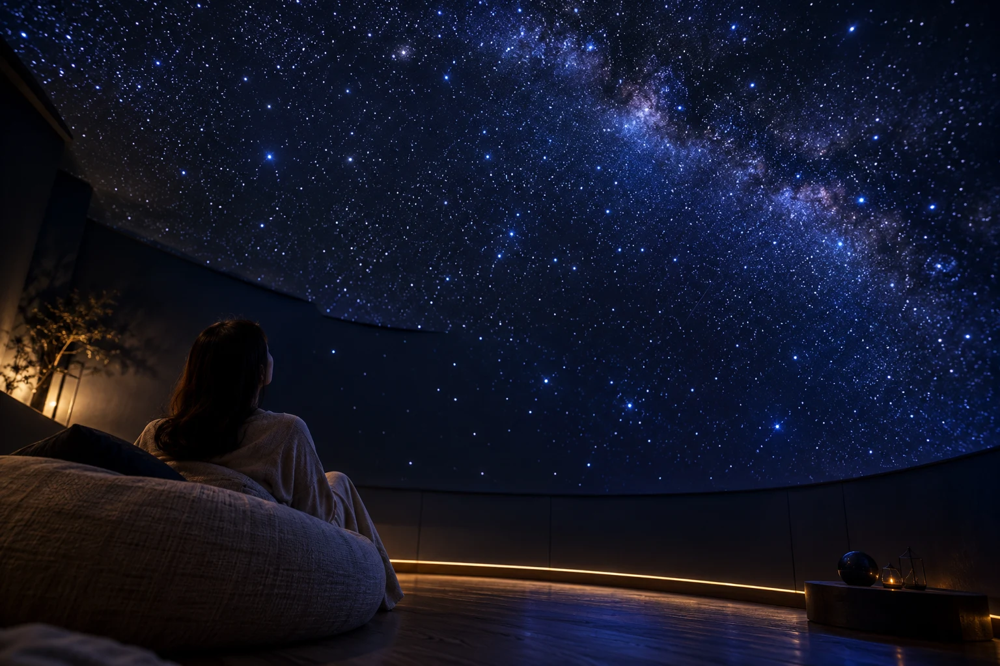

予定を置いてくる。
荷物を下ろして、スマートフォンも少しお休み。自分のためだけの時間を、ここから始めます。
LEAVE A LITTLE SPACE
休むための時間まで、
上手に使おうとしていませんか。
ここにあるのは、小さなドームと、
視界いっぱいに広がる星空。
覚えることも、頑張ることもありません。
座っていても、横になっても。
何かを話しても、黙っていても。
心地よい過ごし方を、あなたのペースで。

CLOSE TO THE STARS
天井の先まで続くような星の奥行き。
いつもの画面から目を離したら、
見上げる時間を、ゆっくりと。
YOUR TIME, YOUR PACE
過ごし方に、正解はありません。
荷物を下ろして、スマートフォンも少しお休み。自分のためだけの時間を、ここから始めます。
クッションに身をあずけて、星の広がりを眺める。星座の名前を知らなくても、十分に楽しめます。
すぐに次の予定へ向かわずに、ひと呼吸。星を見上げた静かな時間を、いつもの毎日へ。
A SMALL PAUSE
光が広がって、ゆっくり小さくなる。
眺めるだけでも、構いません。
タップすると光がゆっくり動きます。
もう一度タップすると止まります。
CHOOSE YOUR QUIET
誰と来るかも、あなたらしく。
誰にも合わせず、気の向くままに。
ひとりで過ごすプライベートな時間。
たくさん話さなくても、いい時間。
大切な人と、同じ星空の下で。
BEFORE YOU VISIT
はい。星座を覚えるための時間ではなく、星空の広がりを自由に楽しむ空間です。知識は必要ありません。
1名のプランをご用意しています。人に気を遣わず、ご自身のペースでお過ごしいただけます。
室内に星空を投影するため、天候に左右されずにお楽しみいただけます。
特別な道具は必要ありません。座ったり横になったりしやすい、楽な服装をおすすめします。
星の投影中は室内が暗くなります。不安がある方は、利用前に明るさや退出方法を確認してください。無理をせず、ご自身に合う過ごし方を選ぶことが大切です。
MAKE ROOM FOR NOTHING
ひとりで。大切な人と。
星に包まれる余白を、選んでみませんか。
プランと料金を確認してからお選びいただけます。